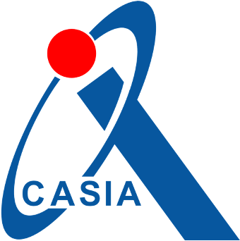
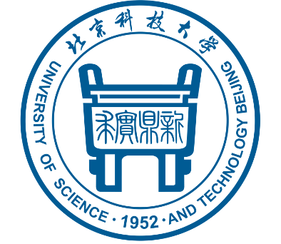
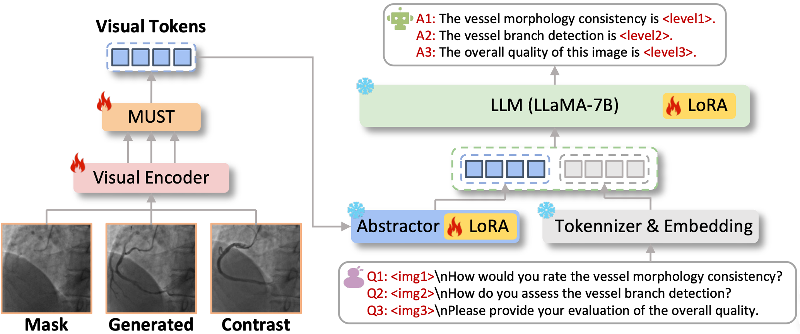

Hi there 👋 Welcome to my Homepage!
I am currently an undergraduate student (2022-2026) at the
University of Science and Technology Beijing (USTB).
I am honored to be an incoming Ph.D. student at
VLRLab,
Huazhong University of Science and Technology (HUST),
advised by Prof.
Xiang Bai (IEEE Fellow).
My research interests primarily lie in 3D Vision and Multimodal Large Models.
News
- [2025-09] Recommended for admission to VLRLab@HUST for PhD studies.
- [2025-07] 🎉 CAS-IQA is accepted in ICONIP 2025.
Experience

Huazhong University of Science and Technology
Sep 2026 - Jun 2031 (expected)
Incoming Ph.D. Student @ VLRLab
Advisor: Prof. Xiang Bai

Institute of Automation, CAS
Aug 2024 - Aug 2025
Research Intern @ HEART Group
Advisor: Prof. Xiao-Hu Zhou

University of Science and Technology Beijing
Sep 2022 - Jun 2026
B.Eng. in Automation
Advisor: Prof. Dong-Mei Fu / GPA: 3.77
Publications

ICONIP 2025 (CCF C)
We propose CAS-IQA, a vision-language model (VLM)-based framework that predicts fine-grained quality scores of synthetic X-ray angiograms
by effectively incorporating auxiliary information from related images.
Awards
- Grand Prize (Champion), National Finals, 18th CIMC China Intelligent Manufacturing Challenge.
- National Encouragement Scholarship 2024, 2025.